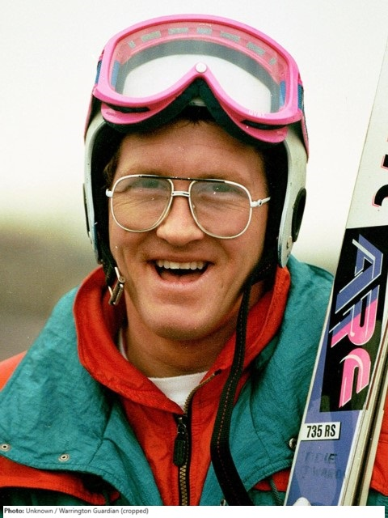

Eddie The Eagle
Jan 2022: Edwards' jump of 71 m at the Winter Olympics was then a British record (now 134.50 m held by Halifax-born Sam Bolton). His Olympic jump still puts him sixth on the all-time list of British ski jumpers.
Jan 2022: Eddie the eagle rule 'A rule that prevents a potential competitor from entering the Olympic Games unless they take part in an international event.
Jan 2022: Edwards failed to qualify for the 1992 Winter Olympics in Albertville, France, or the 1994 Games in Lillehammer, Norway.
Jan 2022: On 13 February 2008, Edwards made a return visit to Calgary to take part in festivities marking the twentieth anniversary of the Games.